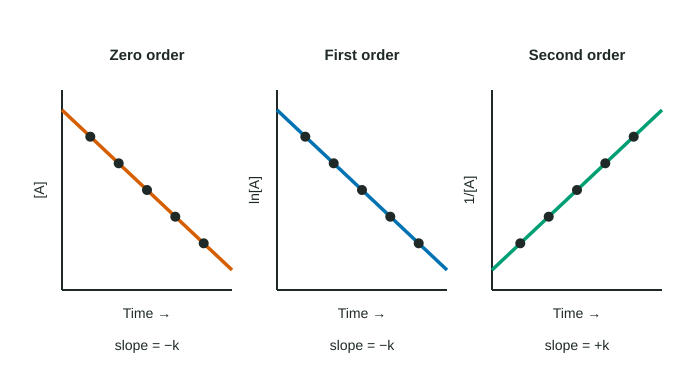

Concentration Changes Over Time
Integrated rate laws link concentration and time.
Part 1 · Hook
Why this matters
Part 2 · Before you start
What this builds on
Part 3 · Prerequisite check
Quick check before you start
1. What is ln(e^(−2))?
- −2
- 2
- 0.135
- −0.301
Show the answer
ln undoes e: ln(e^x) = x, so ln(e^(−2)) = −2.
- Correct: −2:
- 2:
- 0.135:
- −0.301:
2. For rate = k[A], the units of k are:
- s⁻¹
- M s⁻¹
- M⁻¹ s⁻¹
- M
Show the answer
k = rate/[A] = (M/s)/M = s⁻¹.
- Correct: s⁻¹:
- M s⁻¹:
- M⁻¹ s⁻¹:
- M:
Part 4 · See it
See it first

Part 5 · Step by step
How it works, step by step
- Each rate law can be turned into an equation for [A] against timeeach order makes a different plot of the data come out straight
- Only one of [A], ln[A] or 1/[A] against time is linearnaming that plot identifies the order, and its slope gives k
- For first order, the starting concentration cancels out of the halving timethe half-life is constant: t½ = 0.693/k
- With k and the integrated lawyou can predict the concentration at any time or the time to reach any concentration
Part 6 · Key ideas
Key ideas
- Zero order: [A] vs t is linear (slope −k). First order: ln[A] vs t is linear (slope −k). Second order: 1/[A] vs t is linear (slope +k).
- Justify an order by naming the plot that is linear.
- First-order half-life: t½ = 0.693/k, independent of concentration. Radioactive decay is first order.
- Integrated laws use ln, not log.
Part 7 · Misconception
A common mistake
The wrong idea: "The graph is linear, so the reaction is first order."
What actually happens: Every order has a linear graph of something. Say which: "ln[A] against time is linear, so first order." For second order it is 1/[A] against time.
Part 8 · Check yourself
Check yourself
Exam-style questions. Anything you miss goes into your review queue.
Data table
Cyclopropane turning into propene
When heated to a fixed high temperature, cyclopropane gas rearranges into propene:
C₃H₆ (cyclopropane) → C₃H₆ (propene)
A student records [cyclopropane] over time and calculates two more columns from it.
| Time (s) | [C₃H₆] (M) | ln[C₃H₆] | 1/[C₃H₆] (M⁻¹) |
|---|---|---|---|
| 0 | 0.0500 | −3.00 | 20.0 |
| 500 | 0.0370 | −3.30 | 27.0 |
| 1000 | 0.0274 | −3.60 | 36.5 |
| 1500 | 0.0203 | −3.90 | 49.3 |
| 2000 | 0.0151 | −4.19 | 66.2 |
1. Which claim about the order of this reaction is best supported by the table?
- First order: ln[C₃H₆] drops about 0.30 per 500 s
- Second order: 1/[C₃H₆] goes up in each 500 s interval
- Zero order: [C₃H₆] goes down in each 500 s interval
- First order, because the graph of these data is linear
Show the answer
ln[C₃H₆] goes −3.00, −3.30, −3.60, −3.90, −4.19: it falls by about 0.30 each 500 s, so a plot of ln[C₃H₆] against time is a straight line, which means first order. 1/[C₃H₆] rises by more each interval (20.0, 27.0, 36.5, 49.3, 66.2), so that plot curves.
- Correct: First order: ln[C₃H₆] drops about 0.30 per 500 s: Right: equal steps in ln[A] in equal times means ln[A] vs t is linear, which is first order.
- Second order: 1/[C₃H₆] goes up in each 500 s interval: 1/[A] rises, but by growing amounts (not equal steps), so 1/[A] vs t is not linear; it is not second order.
- Zero order: [C₃H₆] goes down in each 500 s interval: [A] falls by shrinking amounts (0.0130, 0.0096, ...), so [A] vs t is curved; it is not zero order.
- First order, because the graph of these data is linear: This is the claim readers do not accept: it does not say which graph is linear. Name the plot, ln[A] against time.
2. Use the first and last rows to find the rate constant k. Include units.
Type a number and its unit.
Show the answer
For first order, ln[A] vs t has slope −k. k = −(ln[A]₂₀₀₀ − ln[A]₀)/(2000 s − 0 s) = −(−4.19 − (−3.00))/2000 s = 1.19/2000 s = 6.0 × 10⁻⁴ s⁻¹.
- Answer: 6.0 × 10-4 s^-1
3. With k = 6.0 × 10⁻⁴ s⁻¹, what is the half-life of cyclopropane at this temperature? Include units.
Type a number and its unit.
Show the answer
t½ = 0.693 / k = 0.693 / (6.0 × 10⁻⁴ s⁻¹) = 1155 s, which is 1.2 × 10³ s to two significant figures. Check with the table: [C₃H₆] falls from 0.0500 M to 0.0250 M somewhere between 1000 s and 1500 s.
- Answer: 1.2e+3 s
Graph
Nitrogen dioxide breaking down
At a fixed high temperature, nitrogen dioxide decomposes: 2 NO₂(g) → 2 NO(g) + O₂(g). A student measures [NO₂] and plots 1/[NO₂] against time.
Data table
| Time (s) | 1/[NO₂] |
|---|---|
| 0 | 25 |
| 20 | 35 |
| 40 | 45 |
| 60 | 55 |
| 80 | 65 |
| 100 | 75 |
4. Use the slope of the 1/[NO₂] line to find the second-order rate constant. Include units.
Type a number and its unit.
Show the answer
For second order, slope of 1/[A] vs t = k. Slope = (75 M⁻¹ − 25 M⁻¹)/(100 s − 0 s) = 0.50 M⁻¹ s⁻¹.
- Answer: 0.50 M^-1 s^-1
5. How long, in seconds, does it take for [NO₂] to fall from 0.0400 M to 0.0100 M?
Type a number in s.
Show the answer
t = (1/[A]t − 1/[A]₀)/k = (100 M⁻¹ − 25.0 M⁻¹)/(0.50 M⁻¹ s⁻¹) = 1.5 × 10² s.
- Answer: 1.5e+2 s
6. A first-order reaction has k = 0.0350 min⁻¹. Starting at 0.800 M, what is [A] after 20.0 min, in M?
Type a number in M.
Show the answer
ln[A]t = ln[A]₀ − kt = ln(0.800) − (0.0350 min⁻¹)(20.0 min) = −0.2231 − 0.700 = −0.9231. [A]t = e^(−0.9231) = 0.397 M.
- Answer: 0.397 M
Part 9 · Summary
Summary
Part 10 · Up next
What comes next
Part 11 · Connections